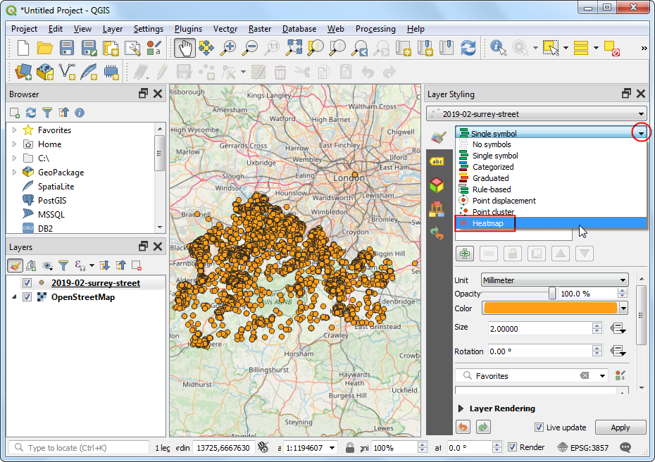

Ujaval Gandhi
Ujaval Gandhi열지도 만들기 (QGIS3)¶
열지도는 밀도 포인트 정보에 대해서 시각화하는데 중요한 도구입니다. 열지도는 사용하는 데이터에 대한 정보의 밀도를 결정하는데 유용한 보간법입니다. 열지도는 보통 범죄정보, 교통 사고, 주택밀집도 등 시각화 하는데 사용됩니다. QGIS의 점 레이어 스타일도구에서 열지도를 표현할 수 있고 점 레이어를 통해 레스터를 만들 수 있는 열지도(케널 밀도 추정) 알고리즘도 있습니다.
작업 개요¶
UK Surrey의 범죄위치 데이터를 활용하여 범죄율이 높은 지역의 열지도를 만들것입니다.
이 예제에서 필요한 다른 기술¶
가상필드사용하기 및 적절하게 표현하기
데이터 획득¶
data.police.uk 는 도로에 따른 범죄, 결과 등 관련 정보를 CSV 형태로 제공합니다. `Surrey Police https://data.police.uk/data/>`_ 정보를 내려받아서 묶여있는 파일을 풀어서 CSV파일을 얻습니다.
아래 링크에서 다음 데이터를 손쉽게 내려받을 수 있습니다:
정보 출처 [POLICEUK]
과정¶
We will first load a basemap layer from OpenStreetMap and then import the CSV data. In the Browser tab, scroll down and locate the XYZ Tiles section.

Expand it to see the OpenStreetMap tile layer. Drag and drop it to the main canvas. Next we will load the CSV file. Click the Open Data Source Manager button.

‘구분자로 분리된 텍스트’항목으로 갑니다. 이곳에서 CSV파일 형태로 구성된 범죄 정보를 넣어줄 예정입니다. ‘…’을 누른 후 ‘파일명’에 내려받았던
2019-02-surrey-street.csv을 넣으세요. Geometry Definition항목에서 “X 필드”와 “Y 필드”는 에 관련한 내용으로 “경도”와 “위도”로 나타내게 됩니다. Geometry CRS`는 ``EPSG:4326 - WGS 84` 로 설정합니다. 예시데이터 항목에 속성이 알맞게 들어가는지 확인 후 추가 및 닫기합니다.

레이어 패널에 내려받은 두가지 레이어가 있습니다- “오픈스트리트맵”과
2019-02-surrey-street. `2019-02-surrey-street``레이어를 오른쪽 클릭 한 후 ‘레이어로 확대/축소’를 합니다.

범죄 사고 점 정보를 오픈스트리트 맵을 기본으로 하는 지도에 올려서 봅니다. 정보를 둘러보시죠. 정보의 밀집정도가 높아 어디가 범죄율이 높은지 찾아내기 힘듭니다. 이런 경우에 열지도 시각화를 통해 쉽게 찾아낼 수 있습니다.
2019-02-surrey-street레이어를 활성화 시킨후 ‘오픈레이어 스타일링 도구’를 눌러줍시다.

렌더링 드롭박스에서 “열지도”를 고릅니다. ‘레이어 스타일 패널’은 캔버스에서 내가 변경해준 값에 대해 어떻게 변화했는지 캔버스에서 바로 확인할 수 있도록 고안되었습니다. 이 레이어는 현재 그레이스케일의 형태로 보여집니다.

열지도는 보통 높은 밀도의 점 벡터들이 있는 구간에 “열”형태로 노랑-빨강 또는 흰-빨강의 색상표로 사용됩니다. ‘색상표’를 누른 후 “Reds”를 사용합니다.

그 다음 ‘반지름’값을 설정해줍니다. 이 값은 개별의 점 정보 주변에 얼마나 영향을 미치는지 설정할 수 있습니다. 정보유형에 따라서 이 값이 의미하는 바는 다릅니다. 우리가 예제로 사용하고있는 정보에서는, 반경 5km내에서 범죄 사고가 영향을 미친다고 가정합시다. 오른쪽 제일 아래 프로젝트 좌표정보가
EPSG: 3857``인지 확인합니다. 이 좌표계의 기본 단위는 '미터'임으로, 반지름 항목에 "5000"을 입력합니다. 다른 파라미터는 `Kernel shape`인데 숨겨져있는 항목입니다. 이것은 주어진 반지름에 대해서 얼만큼 퍼져나갈지 결정하는 함수값입니다. 열지도 렌더링은 "4차"함수를 계산식에서 사용합니다. Kernel 모양은 보통 ``Triangular,Uniform, ``Triweight” 그리고 `Epanechnikov``의 형태의 함수를 사용하기도 합니다. ‘<https://www.geodose.com/2017/11/qgis-heatmap-using-kernel-density.html>’ 이곳에서 열지도와 Kernel shape에 따른 적절한 반지름값 정보를 더 확인하실 수 있습니다.

그렇다면 열지도 시각화가 준비되었습니다. Layer Rendering 항목에서 불투명도를 조정해줍시다. 60%로 설정하여 기본지도와 함께 열지도를 볼 수 있게 해줍시다.

여러종류의 분석에서, 점의 밀도를 고려하는 것만으로도 충분합니다. 하지만 가끔씩, 개별 점에 대해서 중요도를 다르게 주고 싶을 때도 있습니다. 열지도에서 강도사건보다 더 심각한 범죄가 영향이 크다는 것을 설정할수 있습니다. 한 지역의 점의 정보는 다양하게 분석될 수 있습니다. 이렇게, 개별 점 정보를 **가중치**를 설정하여 다른 의미를 부여해 줄 수 있습니다. 가중치 필드를 생성하여 열지도를 더 발전시켜봅시다. ``2019-02-surrey-street``레이어를 오른쪽 클릭 후 ‘속성 테이블 열기’를 합니다.

테이블 필드 중에서 범죄 유형을 구분한 “Crime type”을 확인할 수 있습니다. 다른 범죄 유형에 따라 높은 가중치를 주어 분류해봅시다.

‘필드계산기’를 열어봅시다.

``Crime type``에 따라 계산식을 통해 가중치를 계산할 것입니다. QGIS는 가상필드 생성하기 기능이 있습니다. 이 기능은 QGIS 프로젝트 상에서는 저장되지만 데이터 원본에는 저장되지 않습니다. 다양하게 계산될 수 있으며 QGIS상에서 어디서든 테이블 값으로 사용될 수 있습니다. 산출필드명에 ``weight``를 입력한 후 ``정수 (integer)`를 설정해줍니다. 표현식 패널안에서 작성을 할 것입니다. 우리는 CASE 진술을 사용할 것입니다. 다른 상태에따라 다른 값을 가집니다. 입력 후 확인을 누릅니다.
CASE WHEN "Crime type" LIKE 'Violence%' THEN 10 WHEN "Crime type" LIKE 'Criminal%' THEN 5 ELSE 1 END
가중치에 대한 정보가 들어있는 새로운 필드가 생성되었습니다.

레이어 스타일 패널에 돌아가서, 가중치 부여 항목에서 “weight”를 설정해줍니다.

열지도에서 가중치에 따른 변화를 보실 수 있습니다. 레이어 스타일 패널을 닫아줍니다.

열지도에 대한 시각화 정보를 파라미터 레스터 레이어 또는 원하는 kernels, 다양한 반지름에 따라 변경하고 싶을 경우 공간툴박스에서 **열지도(커널 밀집도 평가)**를 사용할 수 있습니다. 이제 이 알고리즘을 사용해봅시다. 공간처리 툴박스에 갑시다.

열지도를 생성하기 전, 우리는 좌표계를 변경하기 위해 재투영을 할 필요가 있습니다. 거리는 열지도를 계산하기에 있어서 중요하기 때문에, 지리상 좌표계를 사용한다면 맞지 않을 수 있습니다. 공간처리 툴박스에서 벡터일반–> 레이어 재투영을 누릅니다.

레이어 재투영에서 ‘좌표계 선택’을 눌러준 후
EPSG:27700 OSGB 1936 / British National Grid이 좌표계를 설정합니다. 이 좌표계는 영국과 알맞은 좌표계입니다. 확인을 누릅니다.

레이어 패널에서 재투영 레이어가 추가되었습니다. ``2019-02-surrey-street``레이어는 비활성화해줍니다.

공간처리툴박스에서 ‘보간법 –> 열지도(커널 밀집도 평가)’를 누릅니다.

열지도(커널 밀집도 평가) 창에서, 앞에서 진행해왔던 정보값을 동일하게 적용할 것입니다. 반지름은 5000 미터로 설정한 후, 가중치 부여는 “weight” 항목을 설정하고 X,Y의 픽셀 크기는 50미터로 설정합니다. 그리고 Kernel shape는 4차로 설정한 후 확인합니다.

참고
‘필드값을 반지름으로’라는 항목은 각 개별 점에 대해서 다양한 반지름 값을 부여할 경우 사용합니다. ‘가중치 부여’와 함께 사용하여 얼마나 개별 점이 영향을 주는지 사용할 수 있습니다.
과정이 끝났다면, 새로운 레스터 레이어가 “결과물”로 나타나있을 것입니다. 기본으로 설정되어 표시되는 시각자료는 ‘단일 밴드 그레이’로 매우 멋스럽지 못합니다. 레스터 스타일 패널을 들어가줍시다.

“단일 밴드 유사색상”으로 변경해준 후 “Reds”로 색상도를 변경합니다. 이제 레이어가 앞에서 했었던 열지도 시각화처럼 보이네요.

참고
“결과물”레이어는 ``2019-02-surrey-street``레이어와 다릅니다. 열지도 렌더링에서 열지도 레이어를 표현 시 문제점은 범례를 사용할 수 없습니다. 범례를 사용하여 열지도를 표현하고 싶다면, 범례를 추가하여 ‘새 조판만들기’를 하십시오. 레스터로 만들어진 열지도 만들기는 이러한 경우에 사용할 수 있습니다.
If you want to give feedback or share your experience with this tutorial, please comment below. (requires GitHub account)